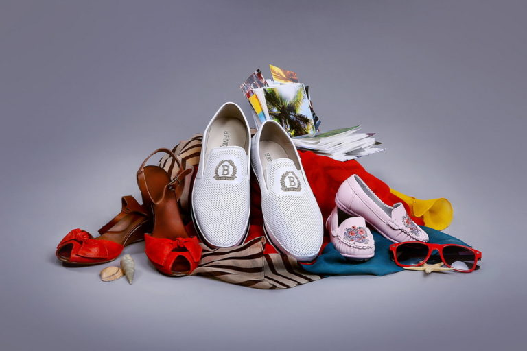
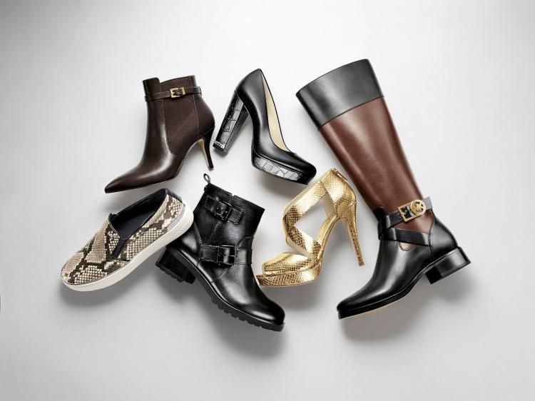
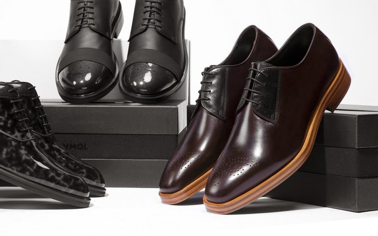

Выбор правильной обуви может оказаться сложной задачей, но это крайне важно для здоровья ваших ног. В этом разделе мы расскажем о том, как выбрать идеальную пару обуви.
Первое, на что нужно обратить внимание при выборе обуви, это правильный размер. Не стоит покупать обувь, которая слишком мала или слишком большая. Это может привести к неприятным последствиям, таким как мозоли или болезненные ощущения.
Качество материалов, из которых сделана обувь, также играет важную роль. Лучше всего выбирать обувь из натуральных материалов, таких как кожа или замша. Эти материалы хорошо вентилируются и позволяют коже дышать.
Стиль обуви также важен. Выберите обувь, которая подходит к вашему стилю и к одежде, которую вы носите. Например, для спортивных мероприятий лучше всего выбирать кроссовки или кеды, а для офисной работы — классические туфли.
Выбор правильной подошвы также играет важную роль. Если вы планируете много ходить, лучше всего выбрать обувь с амортизирующей подошвой. Это поможет снизить нагрузку на ноги и суставы.
Цена обуви также важна. Не стоит экономить на качестве, но и переплачивать тоже не стоит. Выбирайте обувь, которая соответствует вашему бюджету и качеству.
И последнее, но не менее важное — уход за обувью. Регулярно чистите и сушите обувь, чтобы она дольше служила вам. И не забывайте, что каждый тип обуви требует своего ухода, так что следуйте инструкциям производителя.
